Write Our Route
Defining The Route
The time has come to write a route.
So, if we post to the route, let's say 'localhost:8000/completions',
if we visit that url it will exist.
So say this...
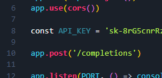
Throughout this entire course, the page of that url will look like
this...
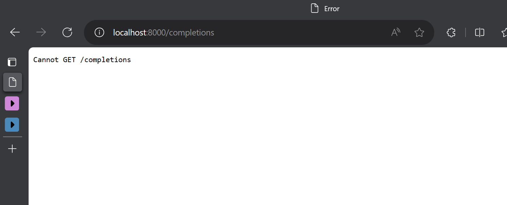
But don't worry that's just fine.
The Route Syntax
The syntax for this will be a request and response...
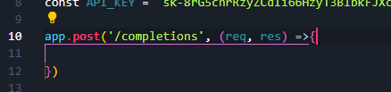
This will actually be an async function, because we are going to
use the await keyword inside it.
But don't worry about that for now.
For now we are just going to add a try catch.
Try Catch
So add a try, then catch and log any errors...
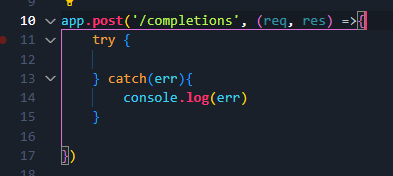
So what are we gonna try?
Well, we are going to use the fetch keyword.
⚠ You must be on the latest version of node for the fetch keyword to
work on the backend!
So all we do is fetch to the 'OpenAI Completions API'.
OpenAI Chat Completions
You should find something like this...
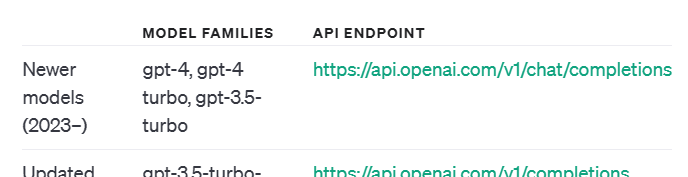
What this is, is a POST request to the openai chat completions
url.
Try
So what are we gonna try? We try to fetch this url.
Like this...
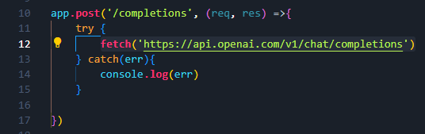
Passing Options
Next we need to pass through some options, like what kind of request
its going to be so what methods, some headers with our API key, what
model of gpt we want to use, and what message we want to send over.
So we add an options parameter to the fetch, and then define the
options object...
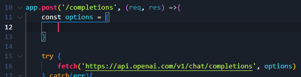
Our first object property is a method that takes a POST, and the
second will be an object of headers...
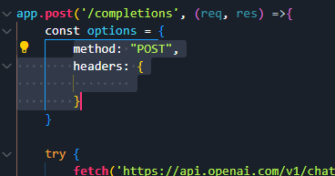
The Object of Headers
The first header we need is "Authorization". Make absolutely sure
you spell it correctly.
Making sure to use backticks, we say `Bearer` with our api key
const...
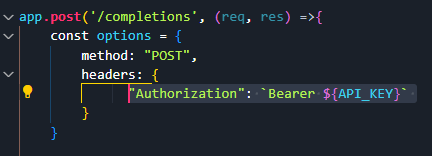
Next we are going to pass the content type as application json,
because we are going to be working with json...
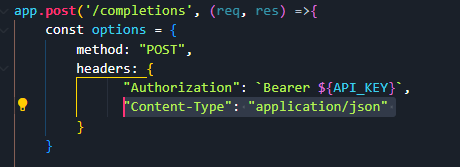
Now we can define the request body.
Defining the Request Body
We are going to have to pass the body through JSON.stringify(), and
it's going to be an object that we send through, and that object
will be "jsonified" thanks to JSON.stringify()
The body should come after the headers like this...
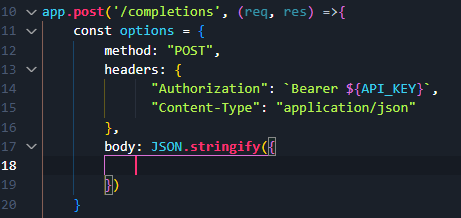
In the body, we define the model of gpt we want to use, the messages
we want to send, and the max amount of tokens we will allow for a
single api request.
Defining that looks like this...
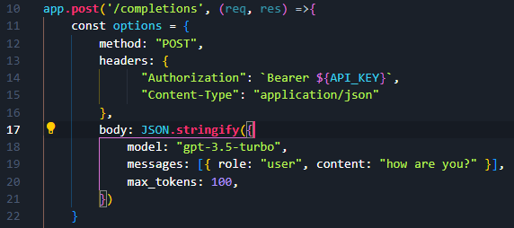
If you have no idea how the tokens, or anything else works, a quick
google will reaveal to you the answers.
📢 IMPORTANT NOTE!
You absolutely MUST have this to pass json from the backend to the
frontend!
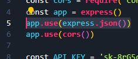
Finish the Try Method
So the fetch to the api is an async method so we need to await the
fetch, and save it to a const.
Here is our try...
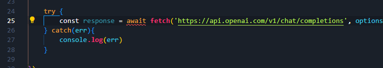
We have an err on await, because since we are using the await
keyword, the parent function needs to be an async method.
So add 'async' in front of the req res function...
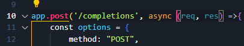
So once the response has been awaited, and we get it back, we're
gonna get its json.
But json is another async function, so we have to await it too.
So we await it and when we get it back we save it as data...
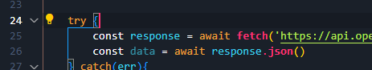
Then we just send the data over to localhost:8000/completions, by
passing it through res.send()
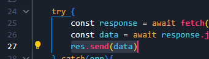
Great! Thats it for this section of the course. Now we can hook the
backendend to the frontend!